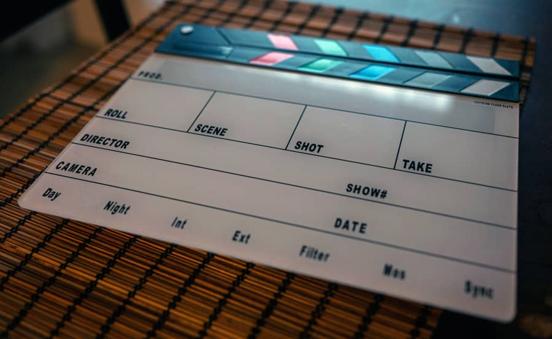
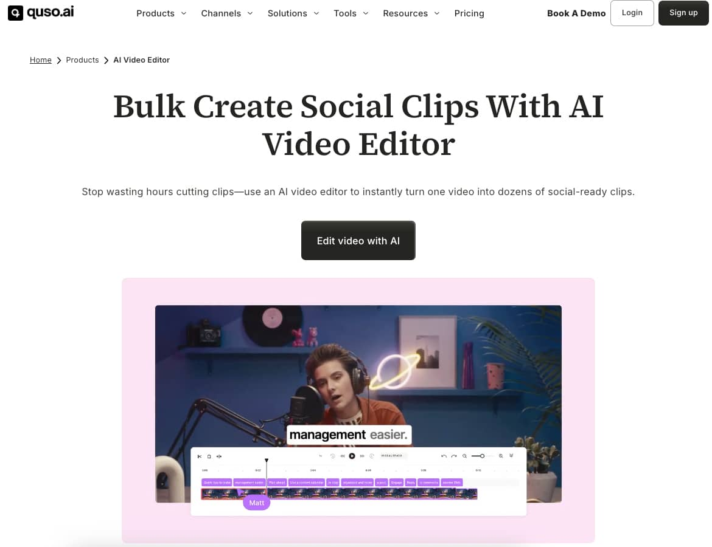
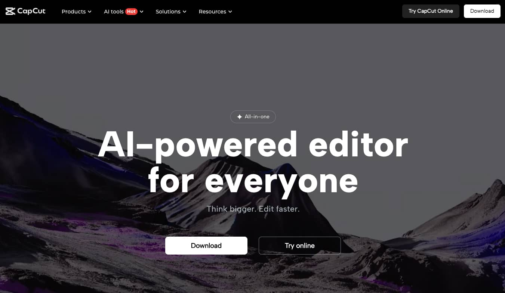
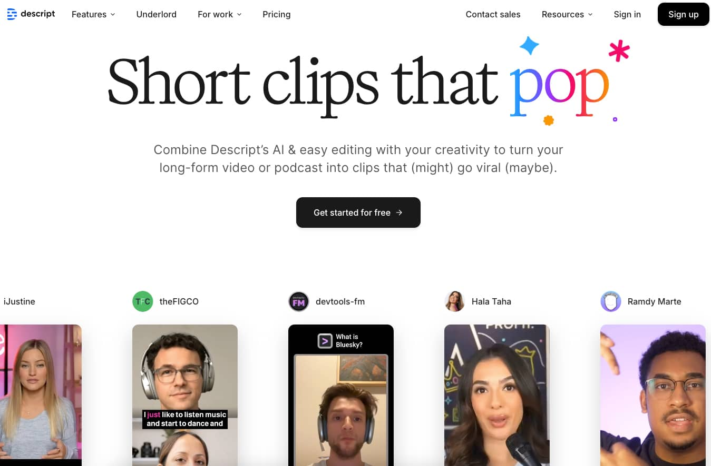

June 16,
2025 | By Victor Nadebu |
Visual storytelling is a winner
across diverse niches, from the entertainment industry to brand-building. The
logic is simple: videos are easy to consume, and they leave a memorable impact.
However, producing them is an uphill journey, as it involves multiple creative
and labor-intensive steps.
Creators need to develop the
concept, write scripts, and storyboard the ideas. Then they have to do the real
work, operating cameras, directing scenes, editing footage, and adding
graphics. Imagine the volume of effort required for transforming ideas into
engaging visual narratives.
The rapid advancements in artificial
intelligence (AI) technology are, however, driving the evolution of video
production. According to a 2024 survey of
media and entertainment industry leaders, nearly two-thirds of business
decision-makers believe that the adoption of GenAI will accelerate content and
media production. Additionally, more than half anticipate reduced production
costs.
In this article, we will explain how
AI tools can simplify video production and list the best ones.

Table of Contents
The AI video generator marketing is
expanding fast and for good reasons. AI reduces the workload by taking on
mundane aspects like sequencing, color correction, trimming, and background
noise removal. Besides reducing production time and effort, these tools allow
creators to focus more on storytelling and creativity rather than technical
minutia.
AI-powered features such as
synthetic media generation, visual effects, and automated scene detection help
creators experiment with new styles and effects. They can now use creative
inputs that were costly or technically challenging earlier.
With AI tools, professional-grade
video editing and production capabilities are accessible to a broader audience.
Marketers, small businesses, and independent creators, without the need for
expensive equipment or large teams, can now create high-quality, technically
sound videos. With this, high-quality video production has been democratized
like never before.
We will now highlight a few
top-rated AI tools that can automate the video-creation process and help create
engaging videos with minimal effort.
Filmora offers a mix of traditional video editing
with advanced AI features such as AI CoPilot, which assists with editing tasks,
and text-based editing for intuitive control. AI music generation can automate
the tasks of creating custom soundtracks, addressing one of the biggest
challenges for video creators.
Now at version 14, the tool has a
blazing-fast render speed and provides a wide range of effects, transitions,
overlays, and trimming tools. It is suitable for both beginners and
professionals as the user-friendly interface comes with professional-grade audio
and visual enhancements.
A basic subscription comes at $49.99
per year, while the Advanced plan can be purchased for $59.99 per year and the
Premium plan comes for $99.99 per year. However, the Basic plan does not
include any AI credits, so you will have to buy them separately if you plan to
access the generative features.
A powerful AI-driven platform, Lightricks LTX Studio makes
end-to-end video production and storytelling effortless for creators. A single
platform supports every step of video generation, from ideation to fi nal edits. It supports text-to-video and image-to-video
conversion, keyframe animation, sequence conditioning, reference image uploads,
motion capture, and video extension.
You can create and customize a
storyboard, shape characters according to your vision, and edit each shot to
perfection in a timeline interface. The tool also helps pitch projects by
automatically generating a polished deck design. The advanced language models
make it easy to describe the exact look and feel of your video. LTX Studio also
supports multiple AI models, including Black Forest’s Flux.1 Kontext, Google’s Veo 2 and Lightricks’
own LTXV 13B.
The comprehensive AI-powered
environment makes LTX Studio valuable for creators, marketers, filmmakers, and
studios alike. The Lite version is available only at $12 per month, while the
Standard and Pro plans cost $28 per month and $100 per month, respectively.
Formerly known as Vidyo.ai, a
standalone product, Quso.ai is
a social media marketing-focused AI video editor. It automates video editing by
trimming footage, selecting key moments, and removing filler words. Besides
generating great videos, it also offers branding tools, social scheduling, and
personalized clip creation.

Quso.ai is capable of resizing
videos for multiple platforms, making it valuable for marketing professionals
posting content across diverse social media channels. You can even use it to
track performance. In simple words, Quso.ai allows you to automate many aspects
of your video project lifecycles.
Marketers can use quso.ai to produce
engaging content efficiently and with a consistent brand identity. The tool has
a free version with 75 credits per month. The Lite version comes for $24 per
month, while the Essential and Growth plans are currently available at the
offer pricing of $33 per month each.
CapCut is a freemium tool from the team behind
TikTok, with powerful video editing capabilities. It offers AI-powered features
such as auto-captions, script-to-video conversion, background removal, and
creative effects. The best thing about CapCut is its
robust support for mobile and web platforms, which facilitates on-the-go
editing and quick content generation.

Developed by the Chinese company
ByteDance, CapCut is available as Android and iOS
apps. It includes a template library and a tool that generates editable video
captions. It allows users to save and export completed projects directly to
various social media platforms.
CapCut is popular among both casual and
professional creators because of its accessibility and ease of use. Besides the
free version, you can opt for CapCut Pro for just
$19.99 per month. The additional features of a Pro subscription are GIF exports
and AI filters to turn images into cartoons or see selfies as they would appear
decades into the future.
Descript introduces
a unique script-based video editing approach, where editing the transcript
automatically edits the video. Features include automatic scene organization,
filler word removal, and AI green screen effects. With this tool, you can
create high-quality videos with beginner-level editing skills.

After a recent revamp, the desktop
app of Descript offers several new features, such as production and
storyboarding tools, along with audio functionality. The advanced AI eliminates
tons of busy work and saves editors a lot of time.
Descript is ideal for generating
dialogue-heavy content like podcasts and interviews as it streamlines the
editing process significantly. You can use a free version of Descript to get
started on your creative journey with text-based editing. Paid plans start at
$16 monthly for hobbyists and go up to $50 monthly for businesses.
Lumen5 specializes
in transforming text and blog content into engaging videos. You can also use it
to repurpose existing videos into fresh ones. Its AI capabilities match key
messages with relevant images and maintain brand consistency. Marketers can use
it to quickly produce videos that amplify their written content.
The AI algorithm automatically
fetches content from text provided by the user, summarizes blog posts, and
matches scenes with relevant stock footage. Users can also edit and customize
the videos to make them consistent with their brand. Lumen5 auto-generates
captions and adds visual overlays. A simple drag-and-drop interface makes it a
breeze to use for beginners.
Lumen5 does the heavy lifting for
brands, marketers, and publishers, enabling them to generate videos without the
hassle or technical expertise. The community version of the tool can be
accessed for free, while the Basic one is available at $19 per month, and
Starter comes at $59 per month. If you want high-end features, you can opt for
the Professional plan that costs $149 per month.
AI has emerged as a game-changer
across various fi elds, and marketing video production is no exception. With
technology taking care of the technical parts, creators now have an upper hand
with creative possibilities. These AI tools automate tedious tasks, increase effi ciency, and reduce
production time and cost.
As AI continues to evolve, we can
expect it to blur the lines between human creativity and machine intelligence
and create new opportunities for storytelling and visual communication.